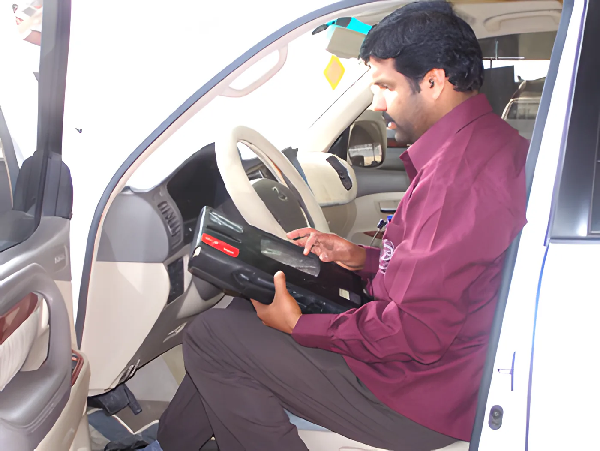
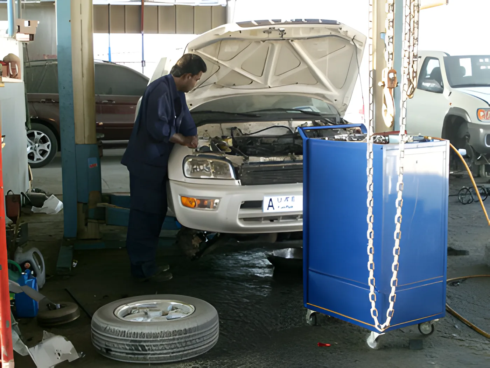
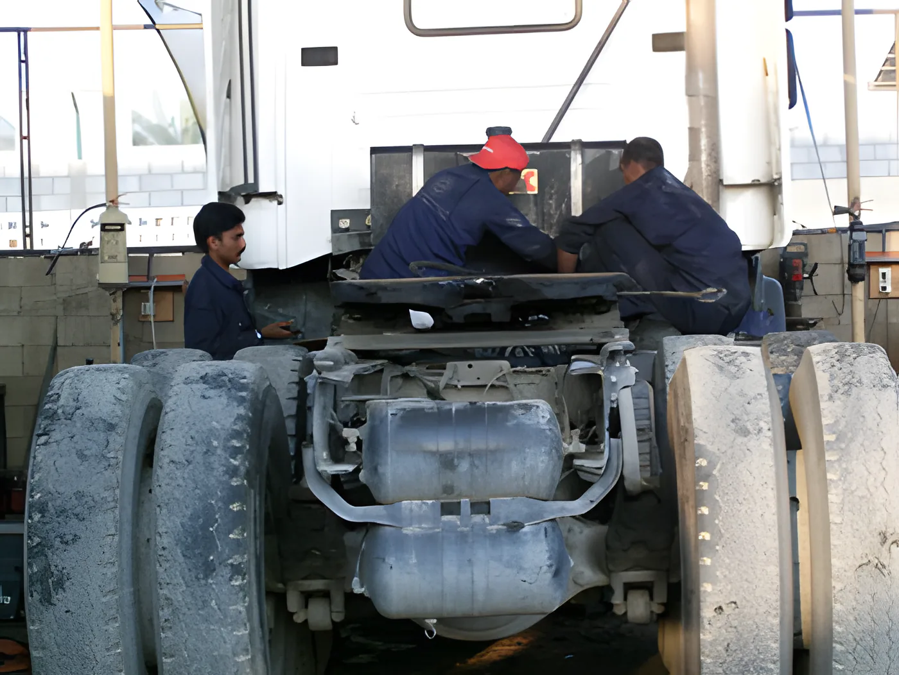
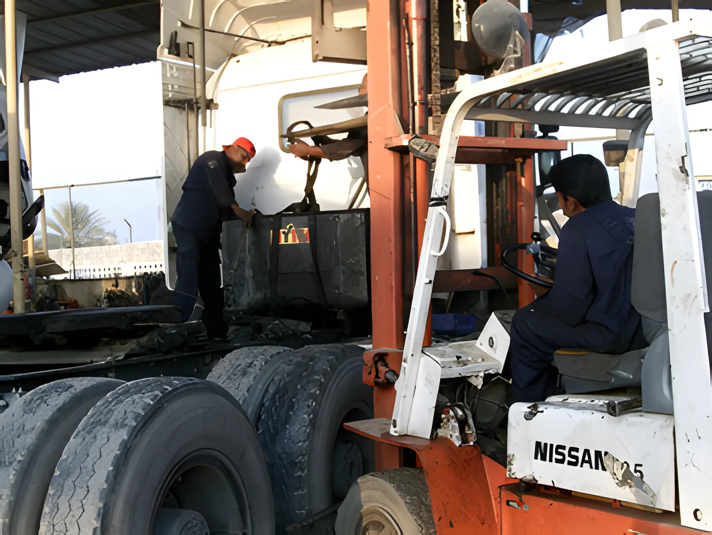

نصلّح الخفيف والثقيل.
كل الشغل اللي تحت يصير في أرضنا في ثوبان وبأيدي عمّالنا. اتصل بالمشرف المختص بمركبتك، أو أرسل صورة واتساب.
01 · مشرف الخفيف
السيارات الخفيفة
كل أنواع السيارات القديمة والحديثة والمركبات الخفيفة: صالون، دفع رباعي، بيك أب وفانات التبريد.



- 01فحص كمبيوتر بأحدث الأجهزة
- 02ترصيص الإطارات
- 03عمرة مكائن
- 04عمرة جير أوتوماتيك
- 05قسم كهرباء ومكيفات
- 06غسيل وخدمة
- 07صيانة مكائن سيارات التبريد
02 · مشرف الثقيل
المركبات الثقيلة
كل أنواع المركبات الثقيلة والمقطورات والرافعات الشوكية، بميكانيكية متخصصين.



- 01عمرة مكائن وجيرات
- 02تفصيل شاصي جديد للمقطورات حسب الطلب
- 03تعديل الشاصي
- 04تصنيع ولحام للمقطورات
- 05كهرباء المركبات الثقيلة
- 06كل شغل ما تحت الشاصي
03 · الحوادث
الحوادث والتأمين
صيانة كاملة وتعديل لمركبات الحوادث، للتأمين وللأفراد. نشتغل مع شركات تأمين كبيرة في الإمارات.


- 01قسم سمكرة بسمكرية خبرة
- 02خلط صبغ بالكمبيوتر
- 03غرفة صبغ مكيّفة ومضبوطة الحرارة
- 04تعديل وتصليح مركبات الحوادث
- 01زجاج أمامي
- 02رديترات
- 03وصلات
- 04هوزات هيدروليك
05 · سحب الأعطال
سحب في كل الإمارات
تعطلت في الطريق؟ سطحتنا تجيب المركبة للكراج في ثوبان.

- 01اتصل على خط السحب
- 02نجيبها ثوبان
- 03المشرف المختص يستلمها